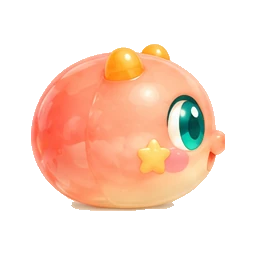

A helping little hand.
Questions, little hiccups, big ideas. We’re listening.
Say hello.
A question, an idea, or just a little wave?
NibbleQuest@outlook.comEmail the jelly crew ↗A little hiccup?
Tell us the level, your device and what happened.
Start a bug report ↗Your privacy.
Ask about your information or send a privacy request.
Contact us privately ↗Let’s untangle
that little puzzle.
How do I undo a move?+
Tap the returning-arrow button near the movement controls. Undo becomes available after a completed move. You can also restart the level for a fresh route.
Can I choose buttons or swipe?+
Yes. Open Settings, choose the Controls tab, then pick buttons or swipe. You can change your choice at any time.
Where are my wallpapers?+
Open the wallpaper backpack to see your unlocked pictures. Choose Favorites to find the ones you love. Open a wallpaper for a larger view and the save option.
Why can’t I save a wallpaper?+
Open the full wallpaper view and use Save. If your phone asks, allow the photo or file permission needed for saving. Check available storage and try again. If it still fails, email us your device and game version.
Does the website puzzle save to the game?+
The little website puzzle is a standalone playground. It does not connect to your mobile save, unlock rewards or make purchases.
What should I include in a bug report?+
Your game version, phone model, operating-system version, affected level and a short list of steps help us investigate. A screenshot can help too. Please leave out passwords and payment details.
Where can I read your policies?+
Visit our Privacy Policy or Terms of Use. You can also email NibbleQuest@outlook.com with a question.

Every little question is welcome.
Take your time. We’re happy to hear from you.